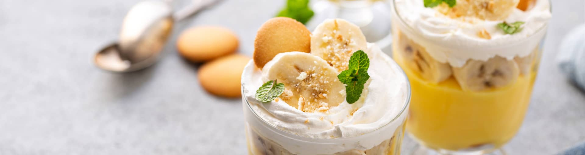

Печиво з листкового тіста для дітей

Шматочки бананів і печива, вкриті ніжним заварним кремом та прикрашені збитими вершками чи кулькою морозива, — це знаменитий банановий пудинг.
Рецепт цього оригінального десерту вигадали в південних штатах Америки лише століття тому. Однак він настільки полюбився публіці, що сьогодні його подають у кафе й ресторанах по всьому світу.
Зазвичай до складу бананового пудингу додають вафлі, пісочне печиво або савоярді. Морозиво найкраще обрати класичне біле або крем-брюле. Довершують композицію листочками м’яти, безе чи подрібненими горіхами.
Успіху Вам і смачних експериментів!
Інгредієнти:
- Банани-2шт
- Молоко-230мл
- Борошно пшеничне-3ст.л.
- Яйця-2шт
- Печиво пісочне-70г
- Вершкове масло-1,5ст.л
- Цукор-80г
- Ванільний цукор-2г
- Морозтво пломбір-100г
Приготування: 25 хвилин
- У невелику каструлю наливаємо молоко та насипаємо просіяне через сито борошно.
- За допомогою міксера збиваємо муку та молоко до повного розчинення грудочок.
- Відділяємо жовтки від білків. Поміщаємо жовтки в окрему миску, додаємо звичайний та ванільний цукор. Перемішуємо.
- Перекладаємо цукрово-яєчну масу до суміші борошна та молока. Збиваємо до однорідної консистенції.
- Ставимо каструлю на слабкий вогонь та нагріваємо суміш 2–3 хвилини, постійно помішуючи.
- Коли маса загусне, знімаємо каструлю з вогню. До суміші додаємо вершкове масло та перемішуємо. Чекаємо, поки суміш охолоне.
- Один банан ріжемо на шматочки та перекладаємо в чашу блендера. Викладаємо частину пудингу з каструлі та подрібнюємо інгредієнти протягом кількох хвилин — до кремової консистенції.
- Банан, який залишився, нарізаємо кружальцями, печиво ламаємо невеличкими шматочками.
- На дно креманок викладаємо банани та печиво, зверху — шар пудингу та кульку морозива. Повторюємо послідовність до повного наповнення склянок. Залишаємо пудинг у холодильнику на кілька годин.
Звемо всіх до столу та насолоджуємося ніжним кремово-банановим десертом.
НАЗАД